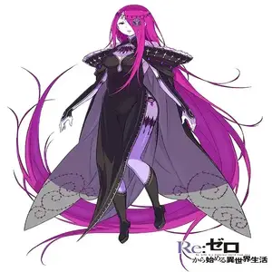

resume-se ao extremo do seu pecado. Extremamente apática e madura, ela considerava o próprio esforço de respirar um fardo doloroso. Apesar de seu enorme poder, possui forte bom senso, maturidade e age frequentemente como pacificadora.
Higiene Extrema (ou a falta dela): A preguiça de Sekhmet é tanta que ela não toma banho, a menos que seja forçada por sua "irmã" Tifão.
Uso da Autoridade: Ela utiliza a sua Autoridade da Preguiça para remover suas próprias fezes instantaneamente, evitando qualquer esforço corporal.
Aparência Doentia: Ela tem cabelos roxos avermelhados absurdamente longos, pele e lábios de um tom branco azulado e emana uma aura apática e sem vida.
possui a Autoridade da Preguiça, que manifesta milhares de mãos e forças invisíveis muito mais poderosas e rápidas do que as de Petelgeuse.
Nascida em um clã que a via como uma "deusa" reencarnada, foi abandonada por não atender às expectativas. Capturada e levada à cidade, ela despertou suas emoções e, sem entender conceitos como gratidão, matou seus captores e exterminou seu próprio clã.